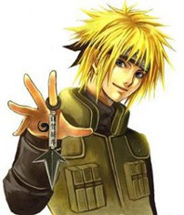
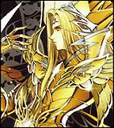

Forums galactiques > Assemblée Galactique : diplomatie officielle > Présentations
| Valentino Falciore Respect diplomatique : 103  24/06 ETU 02:19 | Score : 2 Détails --- Falciore se leva du fond de la salle: ---
" Mes questions, reine, sont au nombre de trois : Premièrement, qui vous a appris les règles de l'Etiquette ? Qui que ce soit, prenez un avocat et faites-lui un procès. Car quand on entre dans un bâtiment, on est prier de FERMER LA PORTE ! J'aime pas les courants d'air, nous payons suffisamment d'impôt comme cela sans rajouter les frais de CHAUFFAGE. Deuxièmement, je ne sais pas qui vous a appris à parler, mais vous avez manifestement un défaut d'élocution assez gênant, pouvez-vous le corriger assez rapidement ? Et enfin, prenez garde, ici ... C'est pas Les Mille et Une Nuits ... Ca serait plutôt les cauchemars d'Orphée... Pourriez-vous, pour votre bien évidemment, corriger votre timidité mal-à-propos ? Ce sera tout, bonne soirée. --- ... --- | ||
| worf359 Respect diplomatique : -9  25/06 ETU 13:01 | Score : 1 Détails Un humanoide de haute stature s'avanca a son tour et prit la parole
"Je suis worf 359eme descendant de l'empire klingon" il toisa l'assembler du regard et reprit "ma planete fut entrainer dans cette univers depuis peu et mon but est simple" il marqua une pause avant de reprendre avec force "je rebatirais ici mon empire kappla" Il tournas les talon et repartis aussitot | ||
| République de Nabow Respect diplomatique : 18 03/07 ETU 13:31 | Score : 10 Détails * Un être entre dans la salle de l'assemblée. Cette individu occupe une nouvelle place dans l'assemblée galacitique. Il est difficile de le décrire puisque il est encore dans l'ombre. lorsque soudainement, le bureaucrate ce lève est annonce au autre système : *
Chère commandant de la galaxie, je souhaite vous informer d'un nouveau venu dans l'union de nos systèmes. La République de Nabow * C'est alors qu'une lumière vient frapper le siège de la nouvelle république avec cette personne assisse sur le banc accompagnée de bureaucrate ou une autre administration. Cette être se leva ; il faisait bien 2 mètre ou 2,50 mètre de haut. Il enleva cette cape sombre qui laissa apparaitre une être à la peau bleuté. Une petit tête avec un visage au trait fin et un corp d'une rare finesse. Il se déplaça vert le podium avec une démarche lente mais au combien rapide en raison de ses grandes foulés. Il était vêtue d'une veste bordeaux et d'une grande soutane qui laissait ses jambes passer à travers une longue fente. Deux épaulettes et une insigne composée d'une balance et d'une épée. Il commença à prendre une grande respiration et annonça avec une longue voix : * La République de Nabow est fière de vous annoncer son émergence au sein de l'union des systèmes de la galaxie. * C'est quelque mot on fait comprendre à l'assemblée que cette nouvelle république devait avoir un large passé et souhaite faire une grand future. * | ||
| Mendax Respect diplomatique : 201  03/07 ETU 15:14 | Score : 2 Détails Eh mais je te reconnais !
Tu es "Pustul" mon grand-père ! Ça alors, t'as pas changé, comment va mère ? ET père ? Ça alors, j'en reviens pas, tu as quitté toi aussi notre planète ? Je me rappelle encore, tu me prenais sur tes épaules et tu m'emmenais au cirque. Tu n'as toujours pas changé, toujours aussi fou, à part tes rides..... | ||
| Mnémosyne Respect diplomatique : 77  03/07 ETU 21:04  | Score : 10 Détails Une jolie jeunne femme entra dans la salle où se faisaient quelques certaines retrouvailles et alla se présenter ...
Peuple d' Origine, Je vais en ce jour me présenter à TOI ! Je me prénnomme Mnémosyne, déèsse de la mémoire. J' ai été envoyée dans cette galaxie pour y dénnoncer toutes les abérations qui y sont commises et y remédier par n' importe quel moyen. Sur ce, je vous laisse à vos occupations et vous souhaite une longue prospération dans vos activitées ... | ||
| Orélia Respect diplomatique : 186  03/07 ETU 22:15 | Score : 3 Détails
Dénoncer les aberrations d'Origine et y remédier... ... vaste programme, ma chère. Le FOU essaie déjà de remédier au fléau de l'orthographe orpheline de ses accents, de ses esses, et de ses accords déchus. Je vous soutiendrai de-ci de-là, peut-être... Orélia | ||
| emerion Respect diplomatique : 11  06/07 ETU 14:21 | Score : 4 Détails Un homme de taille moyenne s'avanca pour prendre la parole
-commandants et commandantes du senat, je me presente, je suis le commandant Emerion de la planète neutralia. Il s'erreta un moment, regarda l'assemblée et repris -Lors de la guerre entre l'alliance et la federation, mon peuple a soufert pour la seul raison que nous etions sur le territoire de l'alliance, alors que nous restions neutre et la tempete magnetique a finis de nous detruire. -Aujourd'hui je ne cherche qu'a reconstruire mon monde, dans la paix et l'entente cordiale, mais n'hesiterais pas a usé de la force en cas d'attaque. Emerion retourna s'assoir enfin d'ecouter la presentation des autre commandants. | ||
| Saiyen Respect diplomatique : 105  06/07 ETU 15:18 | Score : 1 Détails Bienvenue a tous les nouveaux jeunes en éspérant qu'il survivent dans cette galaxie.....
| ||
| Lord Chaps VI Respect diplomatique : 4 07/07 ETU 12:28 | Score : 3 Détails
Depuis que le puissant Dark Maul avait quitté Origine après avoir échoué sa mission de reconstitution de l’empire Chapsique il ne resté quasiment plus personne pour finir cette mission . . . Le dieu Chaps décida donc de faire appelle au conseil de classe Chapsique. Après plusieurs jours de réflexions ils décidèrent d’envoyé un Lord Chaps ! Et pas n’importe le quel ! Le puissant pixélisé Lord Chaps VI ! Réputé pour ses Mawachigerie d’une parfaite maitrise de soi et de contrôle du corps et de l’éprit a la fois stimulé par le chakra de l’individu troisième porte a gauche. ** Lord Chaps VI arriva dans l’assemblé galactique suivit d’un panneau de configuration ** Bonjour à tous je suis l’inspecteur Superbabose venu faire une visite de la galaxie Origine et pouvoir donc en faire un rapport sur les qualités que présente cette Galaxie. Restant à votre disposition pour tout renseignement complémentaire, recevez chers amis mes amicales salutations ! ** En partant il chuchota a l’oreille du panneau de configuration : ** Il n’y ont vu que du feu ha ha ! | ||
| Elim Garak Respect diplomatique : 3 08/07 ETU 01:45 | Score : 3 Détails Je me présente, Elim Garak, pour vous servir!
Donc, à ce jour vous m'avez commandé une présentation? Bien mes amis, je vais la chercher en arrière boutique, je vous demanderais une petite minute, s'il vous plait! Voici, cher clients! Je suis originaire de la planète Cardassia Prime, le plus souvent on me connait par mon nom: Garak, j'ai travaillé comme agent de renseignement et d'execution de cibles définies dans l'Ordre Obsidien, mon mentor en était le fondateur: Enabran Tain. J'aime les relations diplomatiques de longue durée, les meetings quelque peut alcoolisés mais surtout les sciences et les connaissances dans les nouvelles téchnologies dont je suis adèpte depuis environ vingt ans. Ce qui m'interesse dans notre vaste univers c'est biensûr le commerce mais aussi l'amitié, l'entraide et la défence universelle contre les grandes menaces qui nous regardent de haut en baffouant nos libertés. Je parle des Oris et de leur fausse religion... Livre des Origines? Foutaises! Combatons ensembles pour vaincre leurs soldats et Prieurs sans les quels ils ne sont que des êtres élevés sur un plan de conscience superieur ET RIEN DE PLUS! J'éspère que mon service fut agréable, serviable et pas trop soporiphique! Restez fidèles et profitez de 10% de rabais sur tous mes articles! Elim Garak, boutique du tailleur sur la Promenade. | ||
| Mnémosyne Respect diplomatique : 77 08/07 ETU 09:42 | Score : 3 Détails Mnémosyne s' avança vers Orélia et lui dit :
Pour tout vous dire ma chère ce n' est pas forcement de l' otrhogrphe dont je voulais parler mais plutôt des erreurs que certaines personnes ont commises dans le passé, mais ce n' est pas pour cela que je ne soutiendrai pas la croisade anti-boulets ... | ||
| Lord Chaps VI Respect diplomatique : 4 08/07 ETU 14:10 | Score : 1 Détails Humm la croisade anti boulet – se murmurait-il
Puis il prit la parole : Mnémosyne c’est une excellente chose que vous prenez partis de cette croisade et j’en suis fortement ravis il y en a marre de tous ces boulets ! Félicitons Mnémosyne pour cette bonne intention, mais n’oublions pas cette salle est réservé aux présentations. Puis il partit. . . | ||
| Lero Stratos Respect diplomatique : 1  08/07 ETU 23:43 | Score : 5 Détails Les derniers débris des chars combattant pour L'Ordre de Galbinaren étaient encore chauds, à l'entrée de leur dernier bunker, quand les premières unités Stratosiennes investirent la place.
Après douze année de violents combats, les ultimes opposants de l'Oligarque Stratos avaient cédé et la planète pouvait enfin se prendre à réver de paix après la Grande Catastrophe. Le responsable des Coms venait d'annoncer enfin l'unification de la planète dans un système libre et démocratique. L'Oligarque avait été mandaté par le Conseil des Régions Autonomes pour rebâtir les infrastructures détruites... La communication hyperspatiale avait surpris tout le monde : il y avait d'autres survivants au sein même de cette galaxie et sans doute aussi sur d'autres planètes de ce système stellaire. Combien de temps allait durer la paix ? L'Oligarque pris une profonde respiration et s'enfonca dans le QG adverse, au milieu des poussières et des gravats, dans une odeur de métal chaud mélée à la puanteur des chairs brûlées. Il était suivi par quelques caméramen de la Nouvelle Presse Libre. Rien de mieux pour annoncer la paix que de le faire du dernier lieu de combat. | ||
| Marathana Wilson Respect diplomatique : 3 09/07 ETU 13:48 | Score : 3 Détails Une jeune fille entra dans la sombre et honorable assemblée. Dès son arrivé, la grande pièce s’illumina et le jour pénétra la salle noir. La jeune fille était belle, sa peau blanche écarlate de pureté (et pas de virginité ^^) lui donnait un aspect saint. Ses cheveux, couleur arc-en-ciel, éclairaient la pièce de toute leur couleur.
- Bonjour commandante et commandant d’Origine...Je me nomme Marathana Wilson (Marathouninette pour les intimes ^^) Je suis une descendante du soleil ! Sachez une chose et une seule, le soleil à toujours existé depuis que vous êtes nés...le soleil à tout vu... | ||
| itachi uchiwa Respect diplomatique : -3  12/07 ETU 00:15 | Score : -3 Détails Un commandant rentra dans la salle, ses yeux étais crisper, tellement que la lumière étais aveuglante, il avança ne voyant rien il se prix le fil du micro dans les pieds, et tomba il se releva gêner.
"Bien le bonjour a tous le monde je suis ici pour vous dire que je suis une nouveaux commandant, et si vous avez besoin de faire des achats je suis la". "Pour le moment comme je suis très très pauvre je pourrais pas trop vous aidez" Sur ses mots une fumer l'entoura, elle étais tellement épaisse quand ne pouvais voir a travers la fumer commenca a tourné autour de Itachi et la fumer disparut progressivement et on ne voya plus Itachi | ||
| FOU Respect diplomatique : 70  12/07 ETU 14:36 | Score : 2 Détails Un commandant rentra dans la salle. Ses yeux étaient crispés, tant la lumière était aveuglante. Il avança en ne voyant rien, qi bien qu'il se prit le fil du micro dans les pieds, et tomba.
Il se releva gêné. "Bien le bonjour a tous le monde je suis ici pour vous dire que je suis un nouveau commandant et si vous avez besoin de faire des achats, je suis la". "Pour le moment comme je suis très très pauvre je ne pourrai pas trop vous aider" Sur ces mots, une fumée l'entoura. Elle était tellement épaisse qu'on ne pouvait voir a travers. Elle commença a tourner autour d'Itachi et la fumée disparut progressivement. Itachi avait disparu. Itachi Uchiwa est prié de contacter les services du FOU au plus vite afin d'établir une feuille de route pour son niveau orthographique. Nouveau service du FOU : Correction éclaire. Vous vous êtes passé des services du FOU ? Grand mal vous en a pris. Mais tout espoir n'est pas perdu, désormais, nous venons corriger vos textes, même s'il est trop tard pour les éditer. Les Services du FOU | ||
| su Respect diplomatique : 0  12/07 ETU 14:55 | Score : 2 Détails [hrp]MP FOU [/hrp]
| ||
| Barakkuda Respect diplomatique : 19 12/07 ETU 22:50 | Score : 4 Détails Il était arrivé dans cet Univers depuis peu, et avait consacré tout son temps et son énergie à se développer et se défendre.
L'heure était aux présentations, il quitta donc son ermitage et veilla à maintenir une humeur agréable afin de garder une apparence la plus distinguée possible pour un être phyte. Sa voix était grave et rocailleuse, contrairement à son apparence, elle ne changeait pas en fonction de ses sentiments du moment. "Commandantes et Commandants, Membres respectés de cette Assemblée, moi, Barakkuda, Seigneur de Barakadhûl et de ses colonies, descendant de Barakk le septième, Empereur phyte, me présente ce jour devant vous. Je ne suis pas un conquérant, mais plutôt un défenseur offensif. Mon expansion est lente et rampante car je fais partie des seigneurs de l’Ombre et agit selon leurs préceptes. J’apprécie la loyauté et la dignité, l’ironie aussi, honnis la fourberie et la lâcheté. Au nom du peuple phyte, de Barakk et d’Héryellh, je vous salue et vous souhaite prospérité. » Le guerrier phyte inclina son visage a plusieurs reprises dans différentes directions envers l’Assemblée qui l’entourait, puis enclencha son électro-tenseur, et s’en fut, flottant, vers la place qui lui était réservée. | ||
| gaia Respect diplomatique : 0  15/07 ETU 00:24 | Score : 0 Détails une lumière jaune se mit à traverser les nuages et le toit et une voix retentit.
"Je suis Promété fils de Gaïa et frère d'Epimété. Je suis venu sur la terre des mortelle pour vous observer de plus près, vous les enfants de Dieu." Son armure brillait comme les rayons du soleil. Ses ailes déployèrent, il s'envola. Le vent créé par ses ailes était si fort, que certaines personnes furent éjectées. Avant de partir, il prévint les commandants présents. Méfiez-vous, même lors de mes absence, il se peut que je soi présent! | ||
| Lilao Galian Respect diplomatique : 78  16/07 ETU 23:10 | Score : 7 Détails Vous qui souillez les océans,qui avez brûlé le ciel, qui changez les forêts en déserts et le vent en fumée.
Vous qui vous apprêtez a commettre un crime,le même que celui de Lilith, première épouse d'Adam, celle qui devint la femme d'un démon. Vous qui êtes sur le point de vous révolter comme Lucifer,autrefois la plus belle des créatures célestes. Ecoutez les pleurs des êtres ailés qui peuplent le ciel, les serviteurs du Seigneur,ni Dieux,ni hommes. On les appelle les Anges. Ad Perpetuam Rei Memoriam. |
Forums galactiques > Assemblée Galactique : diplomatie officielle > Présentations